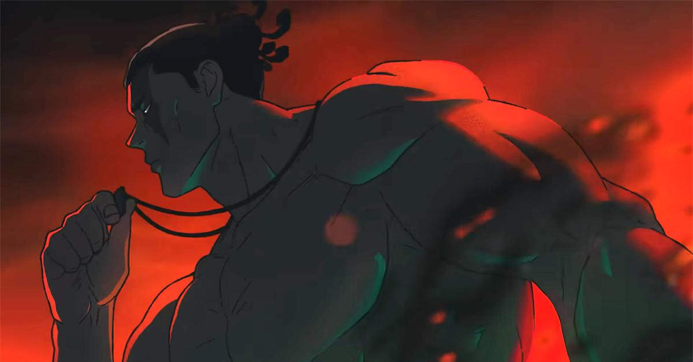

Plan Number 5: Todo Butthole Plan
The first plan to defeat Sukuna involves Todo. Todo's cursed technique allows
him to switch the place of two objects with cursed energy. This ability is activated with
the clap of his hands. Now it's true that his hands got cut off near the end of Season 2,
but there's an easy solution to this. With training and lots of squats, Todo won't need his
hands to clap at all.

Todo's way of defeating Sukuna involves a couple of things:
- An extremely large object imbued with cursed energy, like a cursed semi-truck
- An extremely small, thin object imbued with cursed energy, like a crayon
- An opening to shove the small object inside of Sukuna
Todo won't have very many oppurtunities to get a small object inside of Sukuna.
Sukuna can grow mouths on his body so shoving it down his mouth won't work. He could conceivably
drug Sukuna's food, but we don't yet know if he needs to eat, as we've only ever seen him eat one
of his fingers in the series. The only option I see as plausible is if Todo gets it in through
another orifice. Then all he has to do is clap and the crayon will switch with the semi-truck and
Sukuna will explode. Then they just have to put all his body parts into little containers to
prevent him from regenerating.